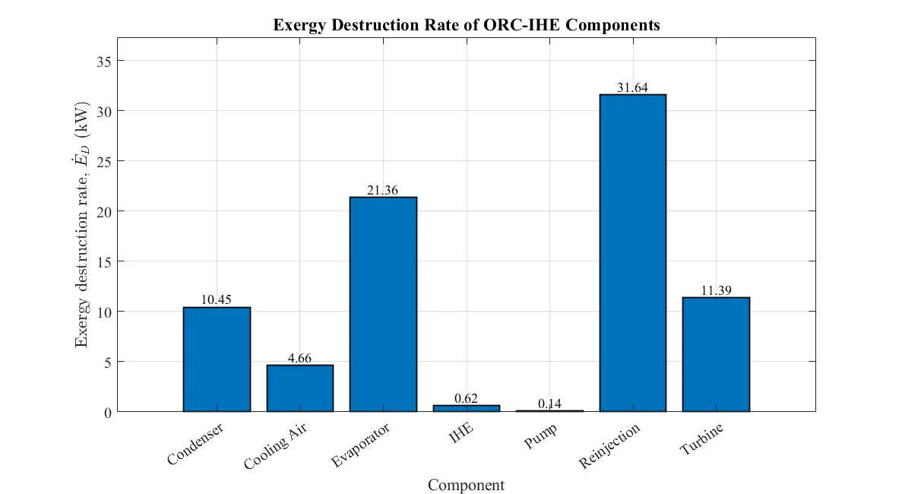
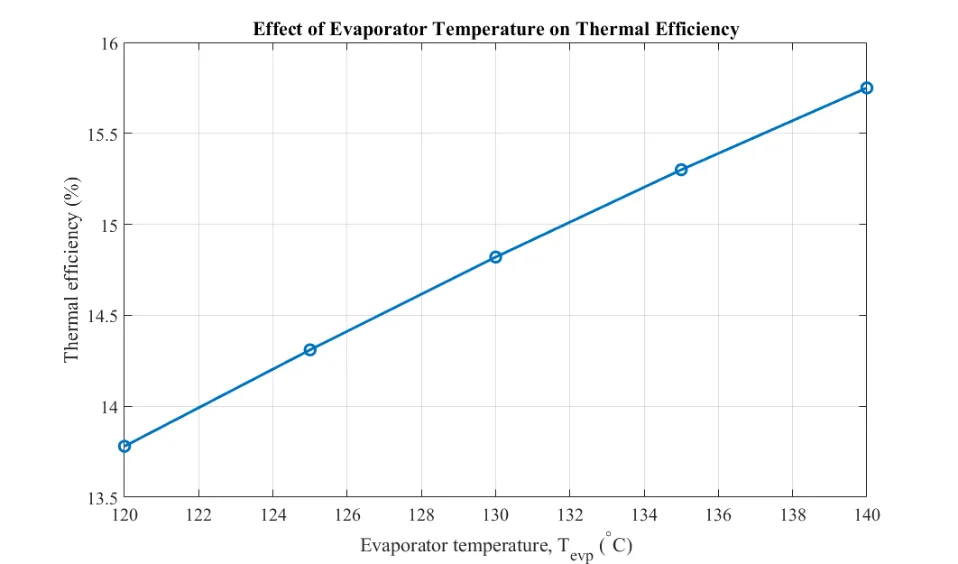

Thermal Engineering & Energy Systems · Thermal / HVAC Track
Thermodynamic, Exergetic and Thermoeconomic Analysis of a Geothermal Organic Rankine Cycle with an Internal Heat Exchanger
Advanced Thermodynamics · University of Tehran
View Full Report (PDF)Download PDF
Project Overview
A numerical study of an Organic Rankine Cycle driven by a geothermal source. The report examines energy and exergy performance, component sizing and thermoeconomic outcomes across operating conditions.
Engineering tools and methods: EES, MATLAB.
Methodology
Modeling and formulation
Established steady thermodynamic state equations and property calculations in EES.
Numerical implementation
Computed thermal and exergetic performance and component-level exergy destruction.
Analysis and comparison
Estimated heat-exchanger requirements and performed parametric variation studies.
Interpretation and reporting
Conducted a thermoeconomic assessment of the modeled cycle.
Selected Findings and Scope
| Item | Reported result or scope |
|---|---|
| Net output | 49.54 kW in the reported baseline case. |
| Thermal efficiency | 13.78% in the reported baseline case. |
| Exergy efficiency | 38.17% in the reported baseline case. |
| Specific production cost | $33.33/GJ under the stated assumptions. |
The findings above reproduce values and limits stated in the submitted project report. They are reported numerical or design outputs unless explicitly noted otherwise; the full PDF should be consulted for model assumptions and details.
Figures from the Report



Complete Course Project Report
The full 101-page report includes the original technical formulation, calculations, figures, results and the references provided with the submitted course project.
Open Full Report (PDF)Download PDF
The public project copy has text-searchable student registration numbers removed where present; scientific content has not been rewritten.